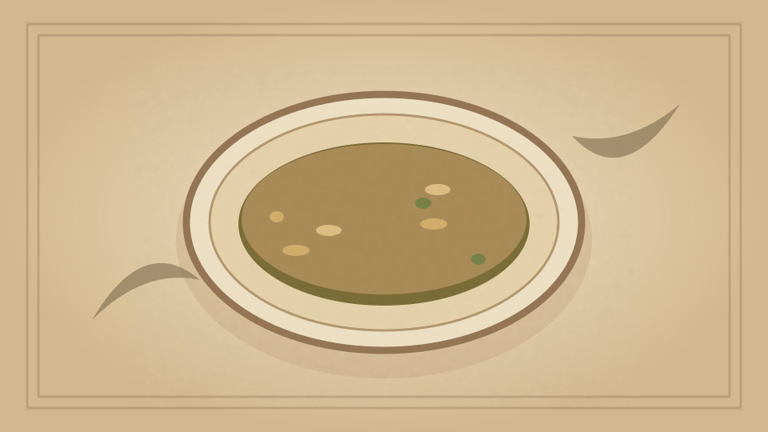

1910 · Fannie Merritt Farmer · SOUPS WITHOUT STOCK
Swiss Potato Soup
The Boston Cooking-School Cook Book

Historical Recipe
The following text is extracted from the 1910 edition, retaining historical terminology and quantities.
Original Ingredients & Directions
4 small potatoes
1 large flat white turnip
3 cups boiling water
1 quart scalded milk
½ onion
4 tablespoons butter
⅓ cup flour
1½ teaspoons salt
⅛ teaspoon pepper
Wash, pare, and cut potatoes in halves. Wash, pare, and cut turnips in one-quarter inch slices. Parboil together ten minutes, drain, add onion cut in slices, and three cups boiling water. Cook until vegetables are soft; drain, reserving the water to add to vegetables after rubbing them through a sieve. Add milk, reheat, and bind with butter and flour cooked together. Season with salt and pepper.
Automatically extracted transcription; editorial verification pending. Historical instructions may not meet modern food-safety standards.